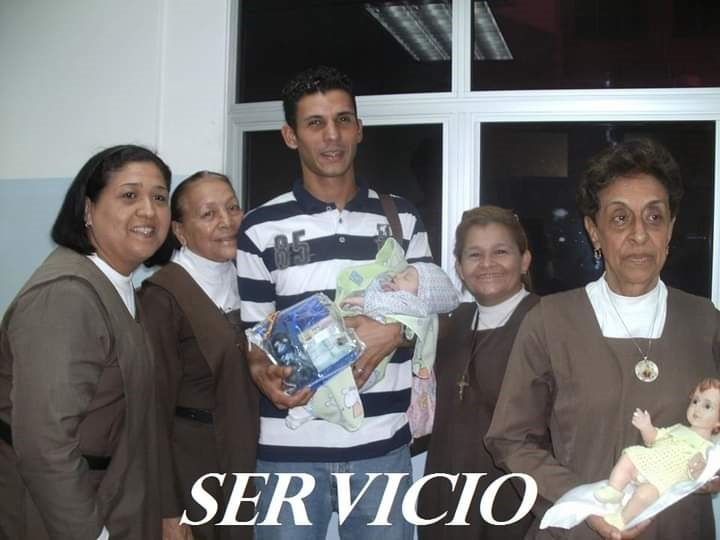
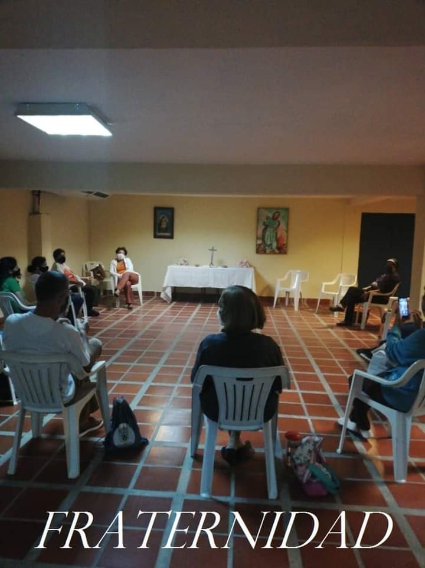

Hora Apostólica

Visita Hospital "Luis Ortega"

Comunidad Fray Elías María Sendra, O.Carm
Somos laicos, hombres y mujeres, que respondiendo al llamado de Dios y movidos por el Espíritu Santo, nos comprometemos a vivir en obsequio de Jesucristo bajo la espiritualidad del Carmelo: fraternidades contemplativas en medio del pueblo. Tenemos como inspiración principal a Jesucristo, estamos llamado a vivir en presencia del Dios vivo y verdadero, reconociendo a Jesús en el prójimo y en los acontecimientos de la vida diaria, compartiendo el camino común hacia la plenitud de la santidad.
Nos organizamos en Comunidad y vemos en ella la manera concreta de encontrarnos más íntimamente con Dios, de realizar nuestra vocación cristiana y alcanzar la perfección de la caridad: el llamado a la santidad, uniéndonos así la Comunidad Eclesial Universal. Formamos parte de la “Orden de los Hermanos de la Bienaventurada Virgen María del Monte Carmelo” y desde nuestra condición o estado de vida, promovemos y testimoniamos los valores propios del carisma Carmelita, reconociendo al Prior General de la Orden del Carmen, como padre espiritual, cabeza y vínculo de unidad de toda la Familia Carmelita.
Actuamos bajo la guía y asesoramiento de la Provincia del Santísimo Redentor de Cataluña y participamos activamente en su vida espiritual y apostólica bajo la dirección del Prior Provincial o su delegado. Nuestra fecha de fundación es el día 05 de Diciembre de 2008 y la fecha de aprobación canónica el día 18 de Octubre de 2018.